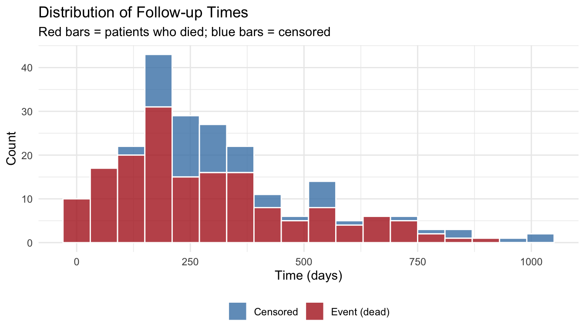
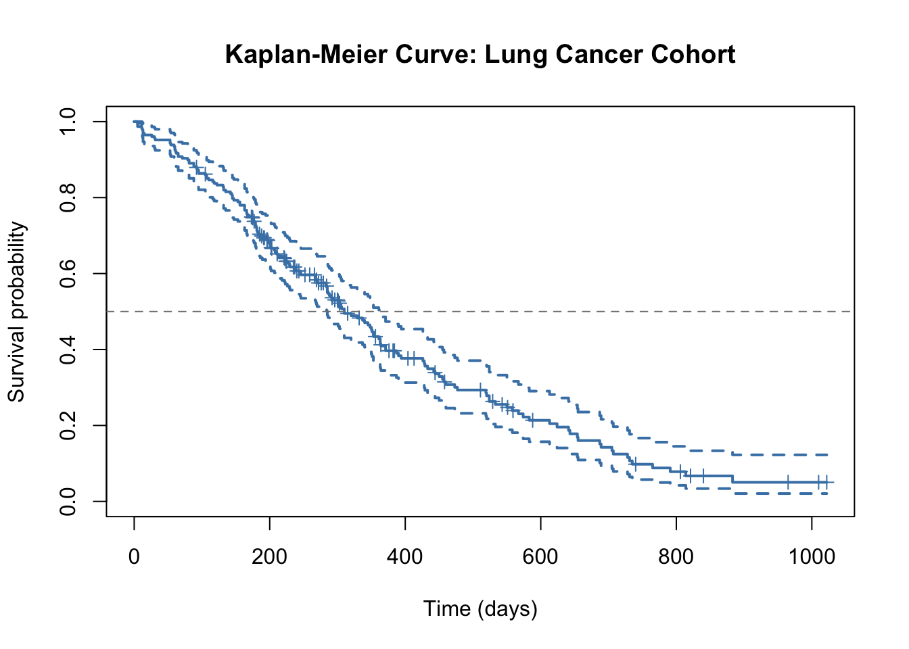
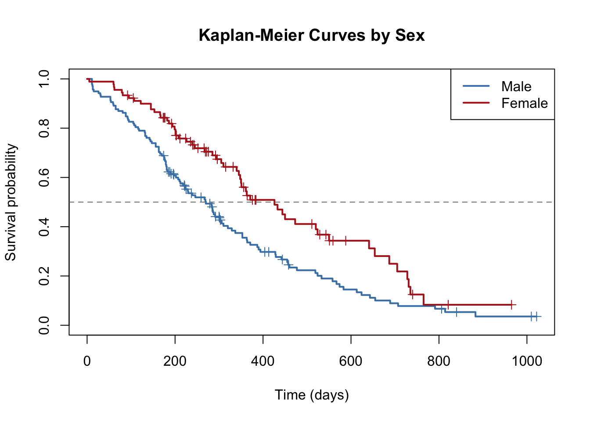
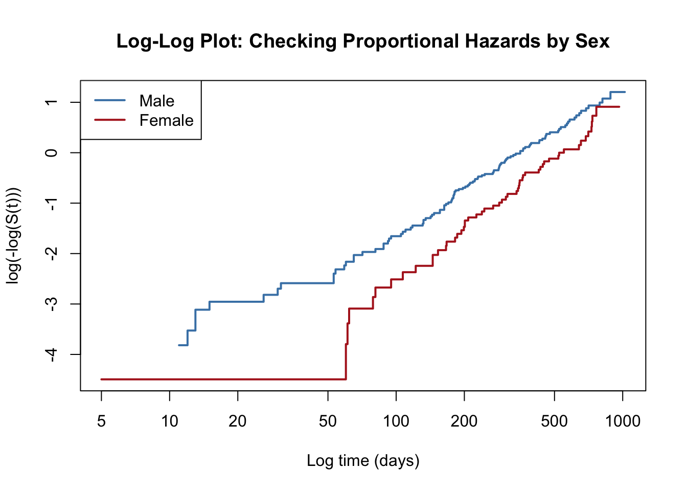

library(tidyverse)
library(this.path)
library(survival)
setwd(this.dir())Day 10: Survival Analysis
SC INBRE Biostatistics Summer Intensive 2026
1 Overview
All of our regression work so far has focused on two types of outcomes: continuous (linear regression) and binary (logistic regression). Today we add a third type: time to an event.
Time-to-event data appear throughout biomedical research. How long until a cancer patient dies? How long until a transplanted kidney fails? How long until a patient’s blood pressure returns to normal after treatment? The statistical tools for these questions are collectively called survival analysis.
Today covers three building blocks:
- Example 1: Understanding the data structure, censoring, and the survival function.
- Example 2: Kaplan-Meier curves, comparing groups, and the log-rank test.
- Example 3: The Cox proportional hazards model, hazard ratios, and adjusted survival estimates.
2 The Lung Cancer Dataset
We will use the lung dataset from the survival package throughout today. It comes from a clinical study of patients with advanced lung cancer conducted by the North Central Cancer Treatment Group.
data(lung)
lung <- as_tibble(lung)
glimpse(lung)Rows: 228
Columns: 10
$ inst <dbl> 3, 3, 3, 5, 1, 12, 7, 11, 1, 7, 6, 16, 11, 21, 12, 1, 22, 16…
$ time <dbl> 306, 455, 1010, 210, 883, 1022, 310, 361, 218, 166, 170, 654…
$ status <dbl> 2, 2, 1, 2, 2, 1, 2, 2, 2, 2, 2, 2, 2, 2, 2, 2, 2, 2, 2, 2, …
$ age <dbl> 74, 68, 56, 57, 60, 74, 68, 71, 53, 61, 57, 68, 68, 60, 57, …
$ sex <dbl> 1, 1, 1, 1, 1, 1, 2, 2, 1, 1, 1, 2, 2, 1, 1, 1, 1, 1, 2, 1, …
$ ph.ecog <dbl> 1, 0, 0, 1, 0, 1, 2, 2, 1, 2, 1, 2, 1, NA, 1, 1, 1, 2, 2, 1,…
$ ph.karno <dbl> 90, 90, 90, 90, 100, 50, 70, 60, 70, 70, 80, 70, 90, 60, 80,…
$ pat.karno <dbl> 100, 90, 90, 60, 90, 80, 60, 80, 80, 70, 80, 70, 90, 70, 70,…
$ meal.cal <dbl> 1175, 1225, NA, 1150, NA, 513, 384, 538, 825, 271, 1025, NA,…
$ wt.loss <dbl> NA, 15, 15, 11, 0, 0, 10, 1, 16, 34, 27, 23, 5, 32, 60, 15, …Key variables:
time: days from study entry to death or censoring.status: 1 = censored (still alive at last contact), 2 = dead.sex: 1 = Male, 2 = Female.age: age in years at entry.ph.ecog: ECOG performance score rated by the physician (0 = fully active, 1 = restricted but ambulatory, 2 = in bed less than half the day, 3 = in bed more than half the day).ph.karno,pat.karno: Karnofsky performance scores (100 = normal, decreasing with worse function).wt.loss: weight loss in the six months before study entry (pounds).
The dataset has 228 patients. Let us check the overall event rate:
lung |>
count(status) |>
mutate(
label = c("Censored", "Dead"),
percent = round(n / sum(n) * 100, 1)
)# A tibble: 2 × 4
status n label percent
<dbl> <int> <chr> <dbl>
1 1 63 Censored 27.6
2 2 165 Dead 72.4About 72% of patients died during the study; 28% are censored. This is a high event rate for a survival study, which is typical for advanced cancer.
3 Example 1: Data Structure and Censoring
3.1 Why Censoring Is Not Missing Data
A censored patient is one who left the study without experiencing the event. We do not know their true event time, but we do know it is greater than their censoring time. This is genuinely useful information.
Consider two naive approaches:
# Naive approach 1: drop censored patients entirely
lung |>
filter(status == 2) |>
summarize(mean_time = mean(time), median_time = median(time))# A tibble: 1 × 2
mean_time median_time
<dbl> <dbl>
1 283 226# Naive approach 2: treat censoring time as the event time
lung |>
summarize(mean_time = mean(time), median_time = median(time))# A tibble: 1 × 2
mean_time median_time
<dbl> <dbl>
1 305. 256.The first approach drops 62 patients and artificially shortens the apparent survival time (we only keep the patients who died, and dying sooner makes you more likely to be included). The second approach treats censored patients as if they had the event at their last contact, also understating true survival. Survival analysis avoids both errors by using all the information available.
3.2 Creating a Survival Object
The survival package uses a Surv() object to bundle the time and event indicator together. It also handles the censoring correctly in all downstream analyses.
# status == 2 means "dead" (event occurred)
# status == 1 means "censored" (event not observed)
lung <- lung |>
mutate(
surv_obj = Surv(time, status == 2),
sex_label = factor(sex, levels = c(1, 2), labels = c("Male", "Female"))
)
# Print a few values to see what a Surv object looks like
head(lung$surv_obj, 10) [1] 306 455 1010+ 210 883 1022+ 310 361 218 166 Values with a + suffix are censored observations. The number is the censoring time, not the event time.
3.3 A Quick Look at Follow-up Times
lung |>
mutate(status_label = if_else(status == 2, "Event (dead)", "Censored")) |>
ggplot(aes(x = time, fill = status_label)) +
geom_histogram(binwidth = 60, color = "white", alpha = 0.8) +
scale_fill_manual(values = c("Event (dead)" = "firebrick",
"Censored" = "steelblue")) +
labs(x = "Time (days)", y = "Count", fill = NULL,
title = "Distribution of Follow-up Times",
subtitle = "Red bars = patients who died; blue bars = censored") +
theme_minimal() +
theme(legend.position = "bottom")
Events (deaths) occur throughout the follow-up period. Censored observations also occur throughout, many near the end of the study window when it closed.
4 Example 2: Kaplan-Meier Curves
4.1 Estimating the Survival Function
The Kaplan-Meier estimator is the standard way to estimate the survival function \(S(t) = P(T > t)\) from data. It accounts for censoring by updating the survival estimate only at times when events are observed, using only the patients still at risk at that moment.
km_overall <- survfit(Surv(time, status == 2) ~ 1, data = lung)
print(km_overall)Call: survfit(formula = Surv(time, status == 2) ~ 1, data = lung)
n events median 0.95LCL 0.95UCL
[1,] 228 165 310 285 363The print() output gives the number of observations, events, and the estimated median survival with its 95% confidence interval.
plot(km_overall,
xlab = "Time (days)",
ylab = "Survival probability",
main = "Kaplan-Meier Curve: Lung Cancer Cohort",
col = "steelblue",
lwd = 2,
conf.int = TRUE,
mark.time = TRUE)
abline(h = 0.5, lty = 2, col = "gray50")
Reading this plot:
- The curve starts at \(S(0) = 1\): all patients are alive at the start.
- Each vertical drop occurs at an observed death time. The size of the drop depends on how many patients were at risk and how many died at that moment.
- Tick marks on the curve are censored patients. At that time, they left follow-up still alive, and stop contributing to the “at risk” count.
- The dashed horizontal line at 0.5 shows where the curve crosses to give the median survival time. From the
print()output, the median is about 310 days (roughly 10 months). - Confidence bands widen over time because fewer patients remain at risk.
4.2 Comparing Groups: KM Curves by Sex
Do male and female patients have different survival experiences?
km_sex <- survfit(Surv(time, status == 2) ~ sex_label, data = lung)
print(km_sex)Call: survfit(formula = Surv(time, status == 2) ~ sex_label, data = lung)
n events median 0.95LCL 0.95UCL
sex_label=Male 138 112 270 212 310
sex_label=Female 90 53 426 348 550plot(km_sex,
xlab = "Time (days)",
ylab = "Survival probability",
main = "Kaplan-Meier Curves by Sex",
col = c("steelblue", "firebrick"),
lwd = 2,
conf.int = FALSE,
mark.time = TRUE)
legend("topright",
legend = c("Male", "Female"),
col = c("steelblue", "firebrick"),
lwd = 2)
abline(h = 0.5, lty = 2, col = "gray50")
The female curve sits consistently above the male curve, suggesting better survival for female patients throughout the follow-up period. Median survival is about 270 days for males and about 430 days for females, a difference of roughly 5 months.
4.3 The Log-Rank Test
To formally test whether the survival curves differ between males and females, we use the log-rank test.
survdiff(Surv(time, status == 2) ~ sex_label, data = lung)Call:
survdiff(formula = Surv(time, status == 2) ~ sex_label, data = lung)
N Observed Expected (O-E)^2/E (O-E)^2/V
sex_label=Male 138 112 91.6 4.55 10.3
sex_label=Female 90 53 73.4 5.68 10.3
Chisq= 10.3 on 1 degrees of freedom, p= 0.001 Interpreting the output:
- The table shows the observed and expected number of deaths in each group under the null hypothesis (identical survival curves).
- The chi-squared statistic and p-value test whether the difference between observed and expected is larger than chance.
- Here, p < 0.05, providing evidence that male and female survival curves are different.
The log-rank test answers “are these curves different?” but not “by how much?” For an effect size, we need the Cox model.
4.4 Describing the Curves Numerically
# Median survival and 95% CI for each group
summary(km_sex)$table |>
as_tibble(rownames = "Group") |>
select(Group, records, events, median, `0.95LCL`, `0.95UCL`)# A tibble: 2 × 6
Group records events median `0.95LCL` `0.95UCL`
<chr> <dbl> <dbl> <dbl> <dbl> <dbl>
1 sex_label=Male 138 112 270 212 310
2 sex_label=Female 90 53 426 348 550This table is the typical summary to report alongside a KM plot.
5 Example 3: Cox Proportional Hazards Model
5.1 Why We Need a Model
The log-rank test tells us that females survive longer than males. But female patients in this dataset may also differ from male patients in other ways. We need to ask: is the sex difference in survival real, or is it a proxy for differences in age or performance status?
lung |>
group_by(sex_label) |>
summarize(
mean_age = mean(age, na.rm = TRUE),
mean_ecog = mean(ph.ecog, na.rm = TRUE),
mean_wtloss = mean(wt.loss, na.rm = TRUE),
n = n(),
.groups = "drop"
)# A tibble: 2 × 5
sex_label mean_age mean_ecog mean_wtloss n
<fct> <dbl> <dbl> <dbl> <int>
1 Male 63.3 0.964 11.2 138
2 Female 61.1 0.933 7.77 90Females in this dataset are slightly younger and have somewhat better performance scores on average. To isolate the sex effect, we need to adjust for these variables.
5.2 The Cox Proportional Hazards Model
The Cox model puts predictors on the hazard function:
\[h(t \mid \mathbf{x}) = h_0(t) \exp(\beta_1 X_1 + \beta_2 X_2 + \cdots + \beta_p X_p)\]
The key feature: \(h_0(t)\), the baseline hazard, is left completely unspecified. We do not have to assume any particular shape for the survival distribution. The predictors shift the baseline hazard up or down by a constant multiplicative factor.
The quantity of interest is the hazard ratio (HR) for each predictor:
\[\text{HR}_j = \exp(\beta_j)\]
This is the multiplicative change in the hazard for a one-unit increase in \(X_j\), holding all other predictors constant. HR > 1 means higher hazard (shorter survival); HR < 1 means lower hazard (longer survival).
5.3 Simple Cox Model: Sex
Start with sex alone, so we can compare the unadjusted and adjusted HR.
cox_sex <- coxph(Surv(time, status == 2) ~ sex_label, data = lung)
summary(cox_sex)Call:
coxph(formula = Surv(time, status == 2) ~ sex_label, data = lung)
n= 228, number of events= 165
coef exp(coef) se(coef) z Pr(>|z|)
sex_labelFemale -0.5310 0.5880 0.1672 -3.176 0.00149 **
---
Signif. codes: 0 '***' 0.001 '**' 0.01 '*' 0.05 '.' 0.1 ' ' 1
exp(coef) exp(-coef) lower .95 upper .95
sex_labelFemale 0.588 1.701 0.4237 0.816
Concordance= 0.579 (se = 0.021 )
Likelihood ratio test= 10.63 on 1 df, p=0.001
Wald test = 10.09 on 1 df, p=0.001
Score (logrank) test = 10.33 on 1 df, p=0.001exp(cbind(HR = coef(cox_sex), confint(cox_sex))) |> round(3) HR 2.5 % 97.5 %
sex_labelFemale 0.588 0.424 0.816Interpretation: the unadjusted HR for sex is about 0.59. Females have roughly 41% lower hazard of death than males at any point in time, and this difference is statistically significant. This is consistent with the KM plot.
Tip
The Cox model HR and the KM log-rank test are related but not identical. The log-rank test is equivalent to a Cox model with a single binary predictor and no ties, so they will give very similar (but not exactly the same) p-values.
5.4 Multiple Cox Model: Adjusting for Age and Performance Status
Now adjust for age and ECOG score to see whether the sex effect persists.
# Restrict to complete cases on the variables we will use
vars_cox <- c("time", "status", "sex_label", "age", "ph.ecog")
lung_cc <- lung |>
drop_na(all_of(vars_cox))
nrow(lung) - nrow(lung_cc)[1] 1cox_full <- coxph(Surv(time, status == 2) ~ sex_label + age + ph.ecog,
data = lung_cc)
summary(cox_full)Call:
coxph(formula = Surv(time, status == 2) ~ sex_label + age + ph.ecog,
data = lung_cc)
n= 227, number of events= 164
coef exp(coef) se(coef) z Pr(>|z|)
sex_labelFemale -0.552612 0.575445 0.167739 -3.294 0.000986 ***
age 0.011067 1.011128 0.009267 1.194 0.232416
ph.ecog 0.463728 1.589991 0.113577 4.083 4.45e-05 ***
---
Signif. codes: 0 '***' 0.001 '**' 0.01 '*' 0.05 '.' 0.1 ' ' 1
exp(coef) exp(-coef) lower .95 upper .95
sex_labelFemale 0.5754 1.7378 0.4142 0.7994
age 1.0111 0.9890 0.9929 1.0297
ph.ecog 1.5900 0.6289 1.2727 1.9864
Concordance= 0.637 (se = 0.025 )
Likelihood ratio test= 30.5 on 3 df, p=1e-06
Wald test = 29.93 on 3 df, p=1e-06
Score (logrank) test = 30.5 on 3 df, p=1e-06exp(cbind(HR = coef(cox_full), confint(cox_full))) |> round(3) HR 2.5 % 97.5 %
sex_labelFemale 0.575 0.414 0.799
age 1.011 0.993 1.030
ph.ecog 1.590 1.273 1.986Interpreting the adjusted model:
- sex_labelFemale: the adjusted HR is about 0.58. After controlling for age and performance status, females still have roughly 42% lower hazard than males. The sex difference is not explained by confounding.
- age: each additional year of age is associated with a slight increase in hazard. Scaled to a 10-year increase, the HR is about 1.12. The CI is close to 1 and depends on the specific dataset; age is a weaker predictor here than performance status.
- ph.ecog: each one-unit increase in ECOG score (worse performance) is associated with a roughly 50% increase in the hazard of death. This is the strongest predictor in the model. A patient with ECOG = 2 has about 2.5 times the hazard of a patient with ECOG = 0.
Important
The sex HR barely changed after adjustment (0.59 unadjusted vs. 0.58 adjusted), which confirms that the sex difference in survival is not attributable to the age and performance score differences between males and females in this cohort. This is the same confounding logic we applied in logistic regression: if the adjusted and unadjusted estimates agree, the potential confounders did not materially distort the unadjusted result.
5.5 Comparing Nested Cox Models
Just as with logistic regression, we can test whether adding a group of predictors improves the model using the likelihood ratio test.
# Does ECOG add anything beyond sex and age?
cox_reduced <- coxph(Surv(time, status == 2) ~ sex_label + age,
data = lung_cc)
anova(cox_reduced, cox_full)Analysis of Deviance Table
Cox model: response is Surv(time, status == 2)
Model 1: ~ sex_label + age
Model 2: ~ sex_label + age + ph.ecog
loglik Chisq Df Pr(>|Chi|)
1 -737.54
2 -729.23 16.624 1 4.556e-05 ***
---
Signif. codes: 0 '***' 0.001 '**' 0.01 '*' 0.05 '.' 0.1 ' ' 1The LRT p-value tests whether ECOG significantly improves the model beyond sex and age alone. A small p-value confirms that ECOG adds independent prognostic information.
5.6 Checking the Proportional Hazards Assumption
The Cox model assumes that the hazard ratio between groups is constant over time. A simple visual check is to plot the log-log survival curves: if the proportional hazards assumption holds, they will be approximately parallel.
plot(km_sex,
fun = "cloglog",
xlab = "Log time (days)",
ylab = "log(-log(S(t)))",
main = "Log-Log Plot: Checking Proportional Hazards by Sex",
col = c("steelblue", "firebrick"),
lwd = 2)
legend("topleft",
legend = c("Male", "Female"),
col = c("steelblue", "firebrick"),
lwd = 2)
If the curves are roughly parallel (equal vertical distance throughout), the proportional hazards assumption is plausible. Crossing curves are a red flag. Here, the separation is reasonably consistent, supporting the assumption for sex.
6 Summary
Three tools, used together, cover the full survival analysis workflow:
Kaplan-Meier curves describe the survival distribution visually and provide median survival estimates. Use
survfit()andplot().The log-rank test formally compares survival curves between groups, without adjusting for other variables. Use
survdiff().The Cox proportional hazards model provides adjusted hazard ratios, handles continuous predictors, and enables confounder adjustment. Use
coxph(). Reportexp(cbind(HR = coef(m), confint(m))).
The proportional hazards assumption underlies the Cox model. Always check it with a log-log plot before reporting Cox model results.
Tomorrow we move to mixed models, where the challenge is not time to an event but correlated observations from repeated measures or clustered data.